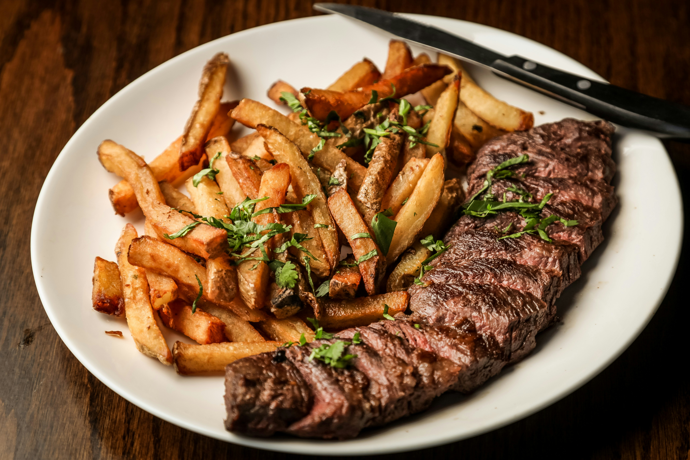

Home
Steak

A seared and butter basted ribeye
Seared Steak
- 10oz Ribeye
- Salt
- Pepper
- Garlic
- Butter
- Rosemary
- Thyme
- Remove steak from fridge and allow to come up to room temperature.
- Apply salt and pepper.
- Preheat a cast iron skillet.
- Sear the steak for 2 minutes per side.
- Add garlic, butter, rosemary and thyme to the pan. Baste the steak.
- Rest for 5 minutes.